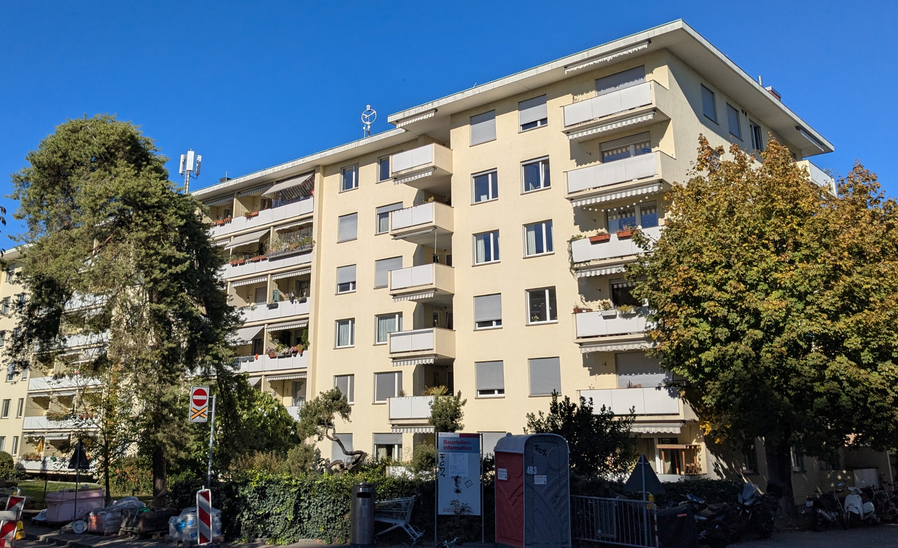
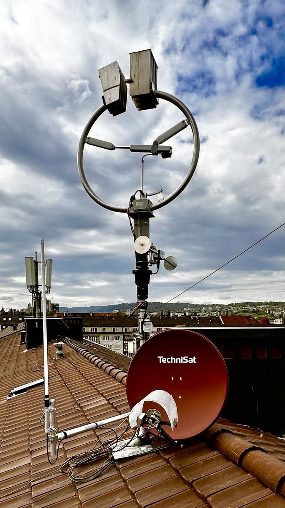
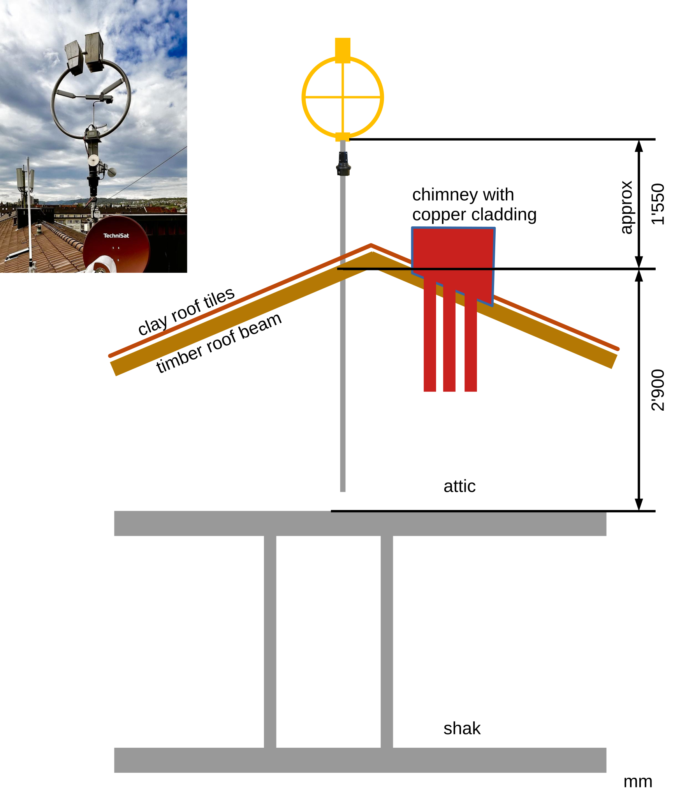

Info: Widely used antenna from the manufacturer Mazzoni, Italy.
Conductor: Aluminium tube, 2 mm wall thickness, bare untreated surface.
Capacitor: Variable air capacitor; the plate stack at the top of the antenna is telescoped in and out.
Environment: Mounted on a mast with a rotor 1.5m above the roof of a 5-storey building
Thanks: Many thanks to Stephan for allowing me to measure his antenna, for the pleasant conversations, and for showing me his workshop and shack.
| Band | 40m | 30m | 20m | 17m | 15m | 12m | 10m | |
| Frequency f | MHz | 7.100 | 10.127 | 14.173 | 18.124 | 21.209 | 24.917 | 28.832 |
| Intrinsic bandwidth Bint | kHz | 5.9 | 9.4 | 34.5 | 31.1 | 182.6 | 99.2 | 271.3 |
| Source of Bint | S-Parameters | |||||||
| Loop diameter D | m | 0.940 | ||||||
| Conductor diameter d | m | 0.049 | ||||||
| Loop count n | 1 | 1 | ||||||
| Inductance L | H | 1.79e-06 | ||||||
| Capacitance C | pF | 281 | 138 | 70.6 | 43.2 | 31.5 | 22.8 | 17.1 |
| Unloaded Q0 | 1 | 1204 | 1076 | 411 | 584 | 116 | 251 | 106 |
| Damping resistance RT | Ohm | 0.0662 | 0.106 | 0.387 | 0.349 | 2.050 | 1.114 | 3.046 |
| Radiation resistance RR | Ohm | 0.00473 | 0.0196 | 0.0757 | 0.204 | 0.384 | 0.738 | 1.336 |
| Loss resistance RLoss | Ohm | 0.0615 | 0.0860 | 0.311 | 0.145 | 1.666 | 0.376 | 1.710 |
| Power to antenna Pfwd | W | 450 | 450 | 450 | 450 | 450 | 450 | 450 |
| swr_min_ant | 1 | 1.17 | 1.28 | 1.50 | 1.13 | 3.12 | 1.34 | 3.16 |
| etaSWR_ant | % | 99.4 | 98.5 | 96.0 | 99.6 | 73.5 | 97.9 | 73.0 |
| Power antenna load Pload | W | 447 | 443 | 432 | 448 | 331 | 441 | 328 |
| Antenna efficiency η | % | 7.10 | 18.3 | 18.8 | 58.2 | 13.8 | 64.9 | 32.0 |
| Loop current I rms | A | 82.18 | 64.77 | 33.41 | 35.85 | 12.70 | 19.89 | 10.38 |
| Loop voltage Uloop rms | V | 6550 | 7364 | 5317 | 7296 | 3025 | 5563 | 3362 |
| Magnetic dipole moment m | A m² | 57.030 | 44.949 | 23.188 | 24.882 | 8.815 | 13.801 | 7.207 |
| Link to calculator | calculator | calculator | calculator | calculator | calculator | calculator | calculator | |



The loop has been exposed to the weather for 3 years (2023...2026). Depending on the orientation of the antenna, the 10 m band is somewhat problematic (high SWR). It is suspected that the copper-clad chimney is causing interference.
Unfortunately the rotor was defective at the time of these measurements, so the antenna could not be rotated — it was fixed pointing west.
The measurements were taken from the attic. There is a detachable connector between the cable and the antenna here, as well as a cable to the shack in the mast below.
A 5 m LMR195 cable runs from the VNA to a 3-way switch, CX-SW3N. The antenna can thus be switched either to the VNA or to the shack.
The VNA calibration was performed at the antenna output of the switch.
From the switch, a roughly 10.4 m long Aircell 7 cable runs to the antenna. The cable length stated here was estimated based on the cable delay.

The calibration was done directly at the NanoVNA V2 Plus4: green line. The cable influence was measured and removed.
The cable attenuation alpha and the cable delay tau in the following table show the estimated cable values based on the NanoVNA V2 Plus4 measurement.
| File | model f0 MHz |
model Bint kHz |
model alpha db |
model_tau ns |
SWR_min_vna | SWR_min_ant | eta SWR |
|---|---|---|---|---|---|---|---|
| 20261027_1418_baby_hb9pwd_swr_1p2_7p1MHz_VALUES.py | 7.100 | 5.9 | 0.156 | 38.71 | 1.16 | 1.17 | 0.994 |
| 20261027_1420_baby_hb9pwd_swr_1p4_10p1MHz_VALUES.py | 10.127 | 9.4 | 0.205 | 41.44 | 1.27 | 1.28 | 0.985 |
| 20261027_1424_baby_hb9pwd_swr_1p4_14p2MHz_VALUES.py | 14.173 | 34.5 | 0.279 | 42.82 | 1.46 | 1.50 | 0.960 |
| 20261027_1426_baby_hb9pwd_swr_1p4_18p1MHz_VALUES.py | 18.124 | 31.1 | 0.278 | 42.44 | 1.12 | 1.13 | 0.996 |
| 20261027_1428_baby_hb9pwd_swr_1p7_21p2MHz_VALUES.py | 21.209 | 182.6 | 0.273 | 41.49 | 2.87 | 3.12 | 0.735 |
| 20261027_1431_baby_hb9pwd_swr_1p5_24p9MHz_VALUES.py | 24.917 | 99.2 | 0.390 | 42.35 | 1.30 | 1.34 | 0.979 |
| 20261027_1433_baby_hb9pwd_swr_2p6_28p8MHz_VALUES.py | 28.832 | 271.3 | 0.428 | 42.17 | 2.78 | 3.16 | 0.730 |
The following diagrams: red points = measured values; green line = fitted model.
| Smith | SWR | Values | |||||||||||||||||||||
|---|---|---|---|---|---|---|---|---|---|---|---|---|---|---|---|---|---|---|---|---|---|---|---|
20261027_1418_baby_hb9pwd_swr_1p2_7p1MHz |
20261027_1418_baby_hb9pwd_swr_1p2_7p1MHz |
20261027_1418_baby_hb9pwd_swr_1p2_7p1MHz
|
|||||||||||||||||||||
20261027_1420_baby_hb9pwd_swr_1p4_10p1MHz |
20261027_1420_baby_hb9pwd_swr_1p4_10p1MHz |
20261027_1420_baby_hb9pwd_swr_1p4_10p1MHz
|
|||||||||||||||||||||
20261027_1424_baby_hb9pwd_swr_1p4_14p2MHz |
20261027_1424_baby_hb9pwd_swr_1p4_14p2MHz |
20261027_1424_baby_hb9pwd_swr_1p4_14p2MHz
|
|||||||||||||||||||||
20261027_1426_baby_hb9pwd_swr_1p4_18p1MHz |
20261027_1426_baby_hb9pwd_swr_1p4_18p1MHz |
20261027_1426_baby_hb9pwd_swr_1p4_18p1MHz
|
|||||||||||||||||||||
20261027_1428_baby_hb9pwd_swr_1p7_21p2MHz |
20261027_1428_baby_hb9pwd_swr_1p7_21p2MHz |
20261027_1428_baby_hb9pwd_swr_1p7_21p2MHz
|
|||||||||||||||||||||
20261027_1431_baby_hb9pwd_swr_1p5_24p9MHz |
20261027_1431_baby_hb9pwd_swr_1p5_24p9MHz |
20261027_1431_baby_hb9pwd_swr_1p5_24p9MHz
|
|||||||||||||||||||||
20261027_1433_baby_hb9pwd_swr_2p6_28p8MHz |
20261027_1433_baby_hb9pwd_swr_2p6_28p8MHz |
20261027_1433_baby_hb9pwd_swr_2p6_28p8MHz
|
A fairly inconspicuous antenna on a rooftop in the middle of Zurich.
The antenna has a fairly unobstructed position. The efficiency is presumably typical (but far below the values stated in the datasheet).
Many DX contacts have already been made with it.
Overview of all Antennas with filter/selection: compare page
Overview of all Antennas static: static compare page
2026 Peter Märki (HB9ISP). This project is created in my free time and has no commercial background. Provided without warranty of any kind. Feedback is welcome.